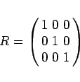
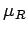

Inhalt Index DeskTop Bronstein

 Algebra und Diskrete Mathematik Fuzzy-Logik Fuzzy-wertige Relationen Fuzzy-Relationen
Algebra und Diskrete Mathematik Fuzzy-Logik Fuzzy-wertige Relationen Fuzzy-Relationen


Eine Kreuzproduktmenge aus n Grundmengen repräsentiert in Analogie zum
kartesischen Produkt für unscharfe Mengen ein n-faches kartesisches Produkt, d.h. eine n-stellige Fuzzy-Relation.
| Beispiel |
|
Farbe-Reifegrad-Relation: Es wird der bekannte Zusammenhang zwischen Farbe x und Reifegrad y einer Frucht mit den möglichen Farben X= {grün, gelb, rot} und dem Reifegrad Y= {unreif, halbreif, reif} in Form einer binären Relationsmatrix mit den Elementen aus {0,1} modelliert. Ausgangspunkt für die Relationsmatrix |
|  | (5.391a) |
ist die Tabelle
| unreif | halbreif | reif | |
| grün | 1 | 0 | 0 |
| gelb | 0 | 1 | 0 |
| rot | 0 | 0 | 1 . |
|  (grün, unreif) = 1,0 , | (grün, halbreif) = 0,5 , | (grün, reif) = 0,0 , |
| (gelb, unreif) = 0,25 , | (gelb, halbreif) = 1,0 , | (gelb, reif) = 0,25 , |
| (rot, unreif) = 0,0 , | (rot, halbreif) = 0,5 , | (rot, reif) = 1,0 , |